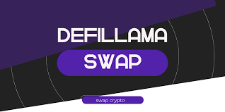

Swap DefiLlama vs. Other DEX Aggregators: A Journey Through the Jungle of DeFi
Remember that time I tried to find the cheapest flight to Bali? It felt like navigating a labyrinthine website filled with pop-ups and hidden fees. That’s kind of how I feel sometimes trying to find the best exchange rate when swapping tokens on decentralized exchanges (DEXs). So, naturally, I dove headfirst into the world of DEX aggregators, specifically comparing the popular Swap DefiLlama with its competitors. And boy, was it an adventure.
The promise of these aggregators is simple: they scour multiple DEXs – think of them as the Kayak.com of the crypto world – to find you the best price for your swap. Sounds dreamy, right? In theory, yes. In practice… well, it’s a bit more nuanced than that.
I started with DefiLlama's Swap. The interface is clean and straightforward, which is a huge plus in this often-overly-technical space. It felt intuitive, even for someone who's more comfortable with spreadsheets than smart contracts (guilty!). The process was quick, and I didn't encounter any major hiccups. But was it really the best price? That's the million-dollar question, isn't it?
That's where the comparison gets tricky. I tested several other aggregators – 1inch, Matcha, Paraswap – and the results were… inconsistent. Sometimes DefiLlama won, sometimes it didn't. It felt a bit like trying to predict the weather – you can consult all the forecasts, but sometimes you still get caught in a downpour. This inconsistency, I think, is inherent in the nature of decentralized finance. The gas fees, the ever-shifting liquidity pools, they all play a part in creating this volatile landscape.
And then there’s the user experience. Some aggregators felt a bit clunky, like they were designed by engineers for engineers. Others were slick and modern, bordering on distracting. DefiLlama struck a good balance for me, but beauty is, of course, in the eye of the beholder – or, in this case, the crypto trader. (I’m still not over Matcha’s unnecessarily aggressive color scheme.)
Another thing that struck me: the level of transparency varies wildly between platforms. Some clearly display all the fees and slippage, while others bury this crucial information somewhere in the fine print. This lack of transparency is a big problem, especially for newcomers to the space. It’s like buying a used car without knowing the mileage – a recipe for disaster.
So, where does this leave us? There isn’t a single "best" DEX aggregator. My experience suggests that DefiLlama is a solid, reliable option, with a user-friendly interface and generally competitive pricing. But it's not a magic bullet. It’s essential to compare across multiple platforms before making a swap, especially for larger amounts.
This journey wasn’t just about finding the cheapest swap; it was about understanding the complexities of the DeFi ecosystem. It highlighted the need for careful research, a healthy dose of skepticism, and perhaps a slightly thicker skin when dealing with the quirks of the decentralized world. It's a wild west out there, folks, but with a bit of caution and exploration, you can navigate it successfully. And maybe, just maybe, even snag that perfect Bali flight deal along the way.

Lost in DEX-land: Swap, 1inch, Matcha – Which Aggregator Reigns Supreme? (Or, My Quest for the Cheapest ETH)
Okay, confession time. I'm not exactly a DeFi guru. I'm more of a "cautiously optimistic newbie" who accidentally stumbled into the world of decentralized exchanges (DEXs) while trying to snag the cheapest ETH for a ridiculously overpriced Bored Ape (don't judge). And that’s where the rabbit hole – or rather, the liquidity pool – truly opened up for me.
Suddenly, I was bombarded with choices: Swap, 1inch, Matcha… It felt like choosing between three equally delicious but slightly different pizzas. All promising the best price, all claiming to be the fastest, most efficient way to swap my tokens. But which one truly delivered?
My initial foray involved a lot of frantic Googling, comparing fees, and generally feeling like I was navigating a digital jungle with a map drawn by a particularly mischievous monkey. That’s when I discovered DefiLlama. It’s not a DEX itself, but rather, a fantastic aggregator of DEX data. It helps you compare the prices offered across different platforms, essentially saving you the headache of manually checking each one.
DefiLlama's strength lies in its sheer transparency. It pulls data directly from the DEXs, giving you a relatively unbiased snapshot of what's available. It's like having a trusted price comparison website, but for crypto. No more hopping between interfaces, praying you're getting the best deal. This is undeniably handy, especially for larger swaps where even a tiny percentage difference adds up.
But is DefiLlama enough? Can it truly replace the convenience (and sometimes, the slick user interfaces) of dedicated aggregators like 1inch and Matcha? That’s where things get a bit fuzzy.
I found 1inch to be a solid all-rounder. It’s generally user-friendly, offers a decent selection of tokens, and the interface, while not exactly groundbreaking, is perfectly functional. It's reliable, like that old pair of jeans you can always count on. Matcha, on the other hand, felt a bit...snappier? Perhaps it’s my imagination, but I noticed a slightly faster transaction speed on occasion. It also seemed to offer more esoteric tokens compared to 1inch, which is a definite plus for adventurous traders.
So, is there a clear "winner"? Honestly, no. It depends entirely on your priorities. DefiLlama is an invaluable tool for research and comparison, allowing you to make informed choices. But it doesn't handle the actual swap, whereas 1inch and Matcha offer a more streamlined, all-in-one experience. I've come to rely on DefiLlama for initial price checks, then head to 1inch or Matcha depending on the specific token I'm trading and my mood (yes, even DEXs elicit emotional responses!).
This whole journey has taught me more than just the intricacies of DEX aggregators. It highlighted the beauty (and occasional chaos) of the DeFi ecosystem. The constant evolution, the plethora of choices, the potential for both incredible gains and equally frustrating losses… it's a wild ride, for sure.
And so, I end not with a definitive answer but with a newfound appreciation for the tools at our disposal. My original quest for the cheapest ETH might have been a little naive, but it inadvertently led me to a deeper understanding of the DeFi landscape. Now, if you'll excuse me, I'm going to go compare prices on a new NFT… and you know, maybe finally buy that Bored Ape. Wish me luck.
DefiLlama's Swap: More Than Just a Pretty Face (and Some Seriously Useful Data)
Remember that time I tried to build a Lego Death Star? Yeah, it didn't go well. Turns out, meticulously following instructions isn't my forte. Navigating the DeFi world feels a bit like that sometimes – a sprawling, complex landscape of protocols, each with its own quirky set of rules and features. So, when I stumbled across DefiLlama's Swap, it was a breath of fresh air (or maybe more accurately, a perfectly chilled glass of crypto-mint julep). Why? Because it’s not just another aggregator; it’s got a personality, a je ne sais quoi that sets it apart.
Let's be honest, the DeFi space is saturated with aggregators. They all promise ease of use, best rates, and generally less hassle than, say, trying to assemble Ikea furniture without the instructions (yes, I’ve done that too). But DefiLlama's Swap manages to rise above the noise, and I think it's down to a few key things.
Firstly, the sheer breadth of supported chains and protocols is impressive. I mean, I've seen aggregators that feel like they're stuck in the early days of DeFi, supporting only the usual suspects. DefiLlama's Swap? It's practically a DeFi world tour, covering a range that even I find difficult to keep up with. This is crucial – it allows users to explore beyond the usual haunts and potentially discover hidden gems (or at least, protocols with slightly better gas fees).
But it's not just quantity of chains; it’s the quality of the information presented. This isn't just a list of numbers; it's a thoughtfully curated presentation, complete with user-friendly visuals that somehow manage to explain complicated trading dynamics without resorting to overly technical jargon. Are there still times I need to squint and ponder the intricacies of slippage? Sure. But it’s undeniably less daunting than wrestling with some other aggregators' interfaces.
Another element that sets DefiLlama's Swap apart is its integration with the rest of the DefiLlama ecosystem. It's not just a standalone tool; it’s part of a larger, interconnected picture. This allows for a richer, more holistic view of the DeFi market, connecting swaps to other relevant data points, providing a better context for your trading decisions. This interconnectedness, for me, is a major game changer. It feels less like using disparate apps and more like having a single, powerful dashboard for all things DeFi.
Now, I'm not going to pretend it's perfect. There are definitely moments where I wish for even more granular control or specific features. Maybe a built-in portfolio tracker, or a more sophisticated charting tool? These are minor quibbles, though, considering the overall experience.
Looking back, writing this article felt a bit like assembling that Lego Death Star – a challenging but ultimately rewarding experience. I started with the vague notion of highlighting DefiLlama's Swap’s unique features, but along the way, I discovered a deeper appreciation for its thoughtful design and powerful functionality. It’s not just about the numbers; it’s about the experience, the ease of use, and the wider context it provides. It’s a testament to how a well-designed platform can make navigating the often-confusing world of decentralized finance significantly easier, even for a DeFi newbie (like, um, me).
The Curious Case of the Wandering Swap: DefiLlama's Routing Efficiency – A Deep Dive (and a Slight Panic Attack)
Okay, let’s be honest. My relationship with DeFi is… complicated. One minute I'm feeling like a financial wizard, effortlessly swapping tokens with the grace of a seasoned Wall Street titan (in my head, of course). The next, I'm staring blankly at a gas fee that could buy me a small island nation (maybe not, but it feels like it). So, naturally, when I started looking into DefiLlama’s routing efficiency, I expected some straightforward answers. Boy, was I wrong.
DefiLlama, for the uninitiated (hi, Mom!), is a fantastic resource aggregating data across various decentralized finance platforms. It’s like a comprehensive spreadsheet for DeFi, if that spreadsheet could also tell you sarcastic jokes and offer cryptic warnings about impermanent loss. But one thing that’s always intrigued me is how it handles routing – that crucial step of finding the best path for your token swap. Because let's face it, nobody wants to overpay for a few measly LINK tokens, right?
The ideal scenario, I thought initially, would be simple: DefiLlama magically finds the cheapest and fastest route across all the DEXs it monitors. A kind of algorithmic financial sherpa guiding your tokens safely to their destination. But reality, as it often does, is a bit messier.
It’s not as simple as comparing gas fees alone. Liquidity matters; slippage can bite you unexpectedly; even the order of transactions can impact the final cost. Think of it like finding the fastest route on Google Maps. It might suggest the highway, but that highway could be jammed with a hundred Tesla convoys (metaphorically speaking, obviously. Though the gas fees sometimes feel like I'm paying for real Teslas). A seemingly longer, quieter back road might actually be faster.
And that’s where the complexity of DefiLlama's routing efficiency comes into play. They have to juggle so many variables, across so many different chains and protocols. It's a herculean task. It made me appreciate the sheer engineering involved, while simultaneously giving me a mild existential crisis about the inherent uncertainties of the DeFi world.
I spent hours (okay, maybe more like half a day) poring over documentation, looking at transaction data, and generally feeling slightly overwhelmed. I’m not a blockchain developer, so some of the technical details felt like trying to decipher ancient Sumerian tablets (though slightly less rewarding, admittedly).
But here's what I gleaned: DefiLlama’s routing, while impressively ambitious, isn't perfect. It's constantly evolving, improving its algorithms, and working to optimize for the best possible swaps. Is it the absolute, unchallenged king of DeFi routing? Probably not. But it’s damn good, and it's constantly striving to be better – which, let's be honest, is more than we can say for some of the other aspects of my life.
So, where does this leave me? With a slightly clearer (though still not completely crystal-clear) understanding of DefiLlama's routing. More importantly, with a renewed appreciation for the complexity and ingenuity behind DeFi's underlying infrastructure. And, perhaps most importantly, a lingering sense of wonder at the sheer amount of work that goes into making even the seemingly simplest transaction a reality. Next time I'm tempted to grumble about a high gas fee, I'll remember the wandering swaps and the quiet heroes making it all happen. It's a journey, not a destination – even in the world of algorithmic finance.
The Wild West of DeFi Data: My DefiLlama Speedrun (and near-meltdown)
So, I was trying to impress my friend, a hardcore DeFi wizard who makes algorithmic trading look like knitting. He’d mentioned DefiLlama, this awesome aggregator site for all things decentralized finance, and challenged me to a "speed run" – who could find the most accurate information on a specific swap’s volume fastest. I, naturally, accepted. I felt like Neo before the Matrix, ready to bend DeFi data to my will. Spoiler alert: Neo would've had a smoother experience.
My first few searches were surprisingly accurate and lightning-fast. DefiLlama’s interface is intuitive enough, even for a slightly-rusty crypto noob like me. I was feeling pretty smug. I imagined the celebratory high-five I’d give my friend once I’d emerged victorious.
Then… the chaos began.
Swap DefiLlama I started digging into some lesser-known protocols, swaps with less liquidity, and some with…let's just say questionable branding. The data started getting…funky. Sometimes it was delayed, showing yesterday’s figures when today’s were already hours old. Other times, it seemed wildly inconsistent with other sources I checked, leaving me questioning if I was even looking at the right data. It felt a bit like trying to navigate a crowded New York subway during rush hour— except the trains were data points, and they were all running on different, unreliable schedules.
This isn't necessarily a knock on DefiLlama, mind you. Aggregating data from countless disparate blockchains, each with their own quirks and reporting methodologies, is an absolute Herculean task. It's like trying to herd cats, only the cats are decentralized protocols and they're allergic to standardization.
The whole experience made me reflect on the inherent challenges in tracking data in this Wild West of decentralized finance. It's not just about speed; accuracy is paramount, especially when you’re making financial decisions. And honestly, a single incorrect figure could lead to a whole world of hurt. Remember that time I accidentally bought 1000 DOGE instead of 100? Yeah, let's not repeat that with DeFi.
Another thought crossed my mind: what about smaller, less-known projects? Do they have the resources to ensure their data is consistently and accurately reported? If not, DefiLlama’s numbers might inadvertently paint an inaccurate picture of the whole DeFi ecosystem. Is this a problem that scales? Does the sheer volume of data overwhelm even the best aggregators? It’s a fascinating, and slightly unnerving, question.
My "speedrun" ended not with a triumphant victory, but with a slightly dazed acceptance of the realities of DeFi data: it’s messy, sometimes inaccurate, and often delayed. It’s a system still finding its feet, scrambling to keep up with the breakneck pace of innovation.
So, did I beat my friend? Let's just say we both learned a valuable lesson that day: trust, but verify. And maybe, just maybe, next time we’ll stick to a less data-intensive competition, like who can make the best meme of a Shiba Inu.
In the end, my DefiLlama escapade wasn't just a test of speed and accuracy; it was a glimpse into the challenges and inherent complexities of building a reliable, real-time overview of the vibrant and ever-evolving decentralized finance landscape. And perhaps, that's even more interesting than the winning time.
Swapping Crypto: Why My Brain Exploded (and What DefiLlama's UI Can Learn)
Okay, confession time. I recently tried to swap some obscure meme coin for something marginally less… meme-y. I felt like a character in a cyberpunk movie, navigating a neon-lit labyrinth of decentralized exchanges (DEXs). Each platform, a different architectural nightmare, with confusing interfaces that made my head spin faster than a Bitcoin miner's fan. I swear, I aged five years in the process.
That’s when I stumbled upon DefiLlama. And while it didn't magically transform my crypto portfolio (sadly), it did offer a slightly less painful experience than some of its competitors. But was it actually better? That's the question that kept bouncing around in my head – a question this whole article is trying to answer.
Let’s dive into the murky waters of UI/UX and compare DefiLlama’s approach to the often-overwhelming world of other DEX aggregators.
One of the biggest differences lies in the sheer amount of information presented. Some platforms feel like they’re trying to cram every possible metric, every single trading pair, onto the screen at once. It's information overload, the digital equivalent of a sensory deprivation tank filled with spreadsheets. DefiLlama, in contrast, attempts (and I stress, attempts) a more streamlined approach. They highlight key data points – swap fees, liquidity, potential slippage – but even then, it can still feel a little dense for the average user. I mean, how many people really understand impermanent loss on a gut level? Probably not many.
Another key area is the visual design. This is subjective, obviously, but I find some competitors’ interfaces visually jarring. Overly bright colors, clashing fonts, and a general lack of aesthetic cohesion can be a real turnoff. It’s like someone threw a bucket of neon paint at a website and called it a day. DefiLlama is… more subdued. It's functional, almost minimalist, but maybe a touch too minimalist? A little more visual flair might make it less intimidating for newcomers. Maybe a splash of color, perhaps? I’m no designer, but I feel like there’s room for improvement.
Navigating the actual swap process also varies wildly. Some platforms are shockingly intuitive, while others require you to solve a crypto-riddle before you can even begin. DefiLlama, again, lands somewhere in the middle. It’s not overly complicated, but it's not exactly intuitive either. I found myself wishing for a clearer, more concise guide for beginners. A simple tooltip system explaining some of the technical jargon would be incredibly helpful.
So, where do we stand? DefiLlama isn't a perfect DEX aggregator. Its UI/UX isn't the holy grail of user experience, and I still find myself occasionally staring blankly at a screen, muttering about impermanent loss. But compared to some of its competitors, it feels like a breath of fresh air. It's a work in progress, and the fact that I'm even writing this article highlights its potential. It's a reminder that even in the chaotic world of decentralized finance, a thoughtful and human-centered approach to UI/UX can make all the difference. Maybe one day I won't feel like I’ve fought a digital hydra just to swap some crypto. A man can dream, right?
DeFillama's Supported Chains: A Wild West of Swapping (and My Mildly Panicked Attempt to Understand It)
Okay, confession time. I’m not a hardcore DeFi bro. I wouldn’t know a liquidity pool from a puddle of spilled kombucha (though, honestly, sometimes the two feel pretty similar). But I do dabble. And recently, that dabbling led me down a rabbit hole – a shimmering, slightly terrifying rabbit hole filled with acronyms, gas fees, and the bafflingly diverse landscape of DefiLlama's supported chains.
My initial foray into this world felt like trying to navigate a bustling marketplace in a foreign country where everyone speaks a different dialect of blockchain jargon. You know, the kind of place where you accidentally buy a year's supply of fermented yak butter because you misunderstood the vendor. That's pretty much how I felt trying to compare the different chains on DefiLlama.
So, what is DefiLlama, you ask? In simple terms, it's like a Zillow for decentralized finance. It aggregates data from various DeFi protocols across different blockchains, giving you a snapshot of the total value locked (TVL), trading volume, and all sorts of other cryptic numbers that initially make your eyes glaze over. But beneath that initial bewilderment lies a treasure trove of information – if you can decipher it.
The supported chains section, however, is where things get truly interesting (and potentially anxiety-inducing). We're talking Ethereum, naturally, the OG of the bunch, boasting a mature ecosystem and… well, also sky-high gas fees. Then there's Binance Smart Chain (BSC), often touted as a cheaper, faster alternative – but is it really as good? Solana whizzes by with its lightning-fast transactions, but is that speed a mirage, masking potential instability? And what about Polygon, Avalanche, Arbitrum, Optimism… the list feels endless, a digital Tower of Babel where every layer speaks a slightly different language of consensus mechanisms and transaction speeds.
I spent hours – I'm not even kidding, hours – poring over DefiLlama, comparing TVL figures across these different chains. Honestly, it felt like comparing apples and oranges, then adding in some space rocks for good measure. Each chain has its unique strengths and weaknesses, its own community and quirks. Trying to objectively rank them based on just TVL feels almost reductive.
For example, while Ethereum might have a significantly higher TVL than many others, that doesn't automatically translate to "better." It's got the network effect going for it, sure, but that also means higher congestion and those dreaded gas fees. BSC, on the other hand, offers a lower barrier to entry but has faced its fair share of controversy. It's a complicated dance, a balancing act between speed, security, cost, and user experience.
And then there's the constant evolution. The DeFi landscape is famously volatile, a wild west where new protocols and chains emerge seemingly overnight. DefiLlama itself is constantly updating, reflecting this dynamism. Trying to maintain a definitive "best" list feels like chasing a greased piglet down a muddy hill.
So, where does that leave me? Well, wiser, certainly. More humbled, definitely. My initial naive hope of finding a simple, definitive answer was crushed, replaced by a nuanced understanding of the complexities inherent in comparing different blockchain ecosystems. I still feel a bit lost in the weeds sometimes, but that's okay. The journey, the exploration, the gradual unraveling of these intricate systems is, in itself, a fascinating experience. And that, perhaps, is the most important takeaway – DeFiLlama is not just a data aggregator; it's a window into a rapidly evolving, intensely fascinating world. The rabbit hole remains, but now, I feel slightly less like I've stumbled into a yak butter minefield.
The Wild West of DeFi Fees: Navigating the Swamp of Swap Transparency (or, My Attempt to Not Get Ripped Off)
Okay, confession time. I’m not exactly a DeFi guru. I'm more of a " cautiously optimistic newbie" trying to navigate this wild, wild west of decentralized finance. My recent foray into swapping tokens on various platforms – and specifically, trying to decipher the fee structures on DefiLlama – felt a bit like trying to assemble IKEA furniture with only half the instructions and a hammer that’s seen better days. Frustrating, to say the least.
The initial promise of DeFi – cheaper, faster, more transparent transactions – is undeniably alluring. But the reality? Well, it's a bit murkier. I mean, I understand the basic concept: gas fees, slippage, protocol fees… But the actual breakdown of these fees? That’s where things start to get… swampy.
DefiLlama, for all its glory as a centralized aggregator of DeFi data, doesn't exactly hand you a neatly packaged fee summary on a silver platter. It gives you the data – raw, unfiltered, sometimes overwhelming. It’s like being handed a giant spreadsheet and told, "Good luck, champ!" You’re expected to interpret the data yourself, which, for someone less mathematically inclined than a garden gnome, can be…challenging.
I spent a good hour (okay, maybe two) trying to understand why the effective fee on one swap was significantly higher than what the initial estimate suggested. Was it slippage? Hidden protocol fees? Some sort of DeFi goblin tax? I couldn't definitively say. The feeling was a bit like being at a used car dealership. You think you’re getting a good deal, but there’s always that nagging feeling that something sneaky is going on under the hood.
And that’s the crux of the issue, isn't it? Transparency, in theory, should be the bedrock of DeFi. Yet, navigating the fees often feels like navigating a minefield. We’re trusting these platforms with our hard-earned crypto, and a clear, concise breakdown of fees shouldn't be a Herculean task. It should be, well, transparent.
I'm not advocating for hand-holding; DeFi users need to be somewhat savvy. But a more standardized approach to fee presentation across different platforms would be incredibly helpful. Think of it like restaurant menus – you wouldn't expect a restaurant to list ingredients without specifying prices. Why should DeFi be any different?
Ultimately, my journey through DefiLlama's fee landscape was both frustrating and enlightening. Frustrating because it highlighted the need for improved transparency. Enlightening because it underscored the fact that the DeFi space, for all its promise, is still very much a work in progress. It’s a constantly evolving landscape, full of challenges, opportunities, and the occasional DeFi goblin trying to sneak away with your hard-earned crypto.
Maybe I'll write another post once I figure out exactly what a "constant product market maker" is. Or maybe I'll just stick to traditional finance for now. The garden gnome is calling. He's got a simpler spreadsheet to decipher. This journey of learning about DeFi fees, however, reminded me that the process of learning itself can often be more valuable than the destination. And maybe, just maybe, someday, the DefiLlama fee information will be as clear as a mountain spring rather than a murky swamp.
Swapping My Sanity: A DefiLlama UX and Accessibility Deep Dive (or, Why My Grandma Can't Buy Shiba Inu)
So, picture this: my Grandma Rose, bless her cotton socks, decided she wanted to get in on this whole cryptocurrency thing. She’s heard whispers about Dogecoin and Shiba Inu (thanks, Uncle Barry), and, being the adventurous soul she is (for a woman who still uses a rotary phone), she wants a piece of the action. Now, my tech-savvy self, I’m happy to help. But then came the DefiLlama swap interface…
Let's just say, the experience wasn't exactly smooth sailing. And it got me thinking: how accessible – really accessible – are these decentralized finance (DeFi) platforms for the average person? Are we building this exciting new financial landscape only for the crypto-savvy elite? I dove into DefiLlama’s swap functionality, hoping to help Grandma Rose, and found myself facing a much larger question.
First off, the sheer volume of information. It's like a digital firehose of tokens, percentages, gas fees, slippage… it's overwhelming! I can navigate it relatively easily, but I had to consciously slow down, break it down, and really visualize how a user who wasn't familiar with blockchain technology would react to it. It's the equivalent of throwing someone into the deep end of a pool and hoping they can swim. Not exactly a welcoming experience.
Then there's the terminology. We throw around terms like "impermanent loss" and "liquidity pools" like they're everyday words. Honestly, even I sometimes have to look them up! For someone unfamiliar with DeFi, this jargon is an impenetrable wall. It's like explaining quantum physics to a five-year-old – you're setting yourself up for failure.
And accessibility? I tried adjusting the font size and navigating using a screen reader (for a more realistic simulation) – it’s… not ideal. The color contrast in some areas is pretty jarring, making it tough to read. I suspect a colorblind user might have even more trouble. We’re talking about people's money here! Should we really make it this hard?
Now, I'm not saying DefiLlama is terrible. I appreciate the vast amount of data it provides and the transparency it offers. It's a powerful tool for those who know how to use it. The problem lies in the gap between its capabilities and its usability.
I managed to eventually guide Grandma Rose through the process (she successfully bought… some questionable meme coin, I'm not quite sure what). But the journey wasn’t a testament to the platform's accessibility but rather to my patience and tech support skills. It highlighted a crucial issue in the DeFi world. We're creating innovative technology, yes, but are we making it accessible to the broader population it could potentially benefit?
Thinking about it, this isn't just a DefiLlama problem. It's a reflection of a wider trend in the tech world – this obsession with functionality over user experience. It’s like building a supercar with amazing horsepower but forgetting to include doors. It might be impressive, but who's actually going to drive it?
So, what’s the takeaway? Well, Grandma Rose might now own some digital assets, but the experience felt less like a financial revolution and more like a frustrating tech puzzle. Defi platforms need to prioritize UX and accessibility to truly democratize finance. We need to ditch the crypto-jargon, improve color contrast, ensure screen reader compatibility, and generally design for all users, not just the hardcore DeFi enthusiasts. Only then can we truly unleash the potential of decentralized finance. And maybe then, my Grandma can buy her Shiba Inu in peace.
The DefiLlama Dilemma: Can We Trust the Llama's Data?
Okay, confession time. I'm not a DeFi guru. I’m more of a “enthusiastic beginner stumbling through the jungle of crypto” type. But even I know DefiLlama. It’s that handy website, that friendly llama, that claims to give you the lowdown on all things decentralized finance. It’s like the Yelp of crypto, right? Except, instead of restaurant reviews, it's TVL (Total Value Locked) numbers and protocol rankings. Big difference. But the question remains: can we really trust it?
Initially, DefiLlama felt like a lifesaver. I mean, navigating the world of DeFi feels like trying to decipher a medieval manuscript written in Klingon. So having a seemingly objective source to compare protocols? It felt like finding a friendly oasis in a vast, unforgiving desert. Plus, that llama logo? Adorable. Seriously, who doesn't love a llama?
But then the doubts started creeping in. It’s all very well having pretty graphs and impressive numbers, but where’s the proof? It's not like they're auditing every single smart contract themselves, are they? I pictured some overworked intern, fueled by caffeine and existential dread, frantically trying to keep up with the ever-expanding DeFi universe. The thought, honestly, is kind of endearing.
And then there's the question of incentives. Is DefiLlama completely unbiased? Or is there a risk of manipulation, perhaps subtle pressure from protocols eager to climb the rankings? After all, a higher ranking probably means more users, which, let's be real, translates to more money. It’s not a conspiracy theory, it’s just… human nature, isn’t it? We all want to look good. Even llamas.
I did some digging (okay, more like a quick Google search), and found articles discussing the methodology behind DefiLlama’s data. Some were reassuring, some less so. It’s a complex beast, this DeFi data aggregation business. It's not as simple as counting coins. There are nuances, technicalities, and frankly, things that are probably way beyond my understanding.
So, where does that leave us? Do I still use DefiLlama? Yes. It's still a valuable tool, a helpful starting point, a convenient overview. But I approach it with a healthy dose of skepticism. I don't take its numbers as gospel. I cross-reference information, I delve deeper into individual protocols, I treat it as a starting point, not an endpoint.
This whole experience, though, has taught me something important. In the wild west of DeFi, trust isn't just given; it's earned. And maybe that's a good thing. It forces us, the users, to become more informed, more discerning, more critical thinkers. And it's made me appreciate the complexity, and the inherent risk, that comes with playing in this digital sandbox. So, while I’m still charmed by the llama, I’m also keeping a watchful eye. It's a journey, not a destination, and that's okay. Even a little bit chaotic. Because that, my friends, is the thrill of DeFi. And maybe, just maybe, that's why we all keep coming back for more.
.jpeg)
Long-Term Roadmaps: Why DefiLlama's Rivals Feel Like They're Playing a Different Game
Remember that time I tried to build a Lego castle, only to realize halfway through I was missing crucial pieces? That’s kind of how I feel looking at the long-term roadmaps of DefiLlama's competitors. They’re building something… but is it the same castle?
DefiLlama, for those unfamiliar, is that incredibly useful website aggregating data across decentralized finance. It's become the go-to resource for anyone involved in DeFi, myself included. But the landscape is crowded, and several other projects are vying for a piece of the pie. The thing is, their ambitions – at least judging by their public statements – seem… different.
Now, I’m not saying these rival projects are bad. Far from it. Some have fantastic technology, slick interfaces, and even some features that DefiLlama lacks. But when I delve into their long-term visions, I see a divergence, a fundamental difference in how they perceive the future of DeFi data aggregation.
Take, for example, Project X (I’m avoiding naming names to keep this friendly, but you know who you are!). Their roadmap heavily emphasizes AI integration for predictive analytics. That’s cool, sure. But does the average DeFi user really need AI-powered predictions about the next DEX to explode? Isn't the immediate need for reliable, accurate, present data more crucial? I'm not convinced; I feel a slight disconnect between the sophistication of their proposed tech and the immediate, pressing needs of the user.
Then there’s Project Y, who seem laser-focused on building a fully decentralized, community-governed platform. Noble goal, absolutely. But decentralization for the sake of decentralization can be a rabbit hole. Will this actually improve the core functionality – getting reliable data to users quickly and easily? Or is it a case of shiny technology overshadowing practical utility? I often find myself questioning the balance between these two. It's a tension inherent in the space, isn't it?
Swap DefiLlama , on the other hand, feels much more grounded. Their roadmap, as far as I can gather, focuses on enhancing the core functionality: better data aggregation, improved user interface, more robust security. It's less flashy, less about revolutionary tech, and more about diligently building a solid foundation. It's the difference between building a Lego castle meticulously, piece by piece, and throwing together a haphazard structure hoping for the best.
Of course, maybe I’m wrong. Maybe these other projects will disrupt the market with their bold visions. Perhaps AI-powered DeFi predictions are the future, and my Lego castle analogy is completely off the mark. And honestly, part of me hopes they are right. More innovation in the space is good for everyone.
But writing this has made me appreciate DefiLlama’s more pragmatic approach. It's less exciting, sure. But sometimes, a reliable, well-built foundation is more valuable than a wildly ambitious, potentially unstable structure. Perhaps it's a reflection of my own personality; I prefer a steady, measured approach.
So, where does this leave us? Honestly, I’m not entirely sure. This was more of a thought experiment than a definitive analysis. I’ve come away with a newfound respect for the different approaches to building within the DeFi data space. It's a reminder that there's often more than one way to build a castle, and that the "best" approach might depend entirely on your perspective and priorities. Maybe my next project will be that AI-powered DeFi prediction tool...after I finish my Lego castle, of course.
tags: Decentralized Finance, DeFi, DEX Aggregators, DefiLlama, 1inch, Matcha, Paraswap, Aggregator Comparison, DeFi Yield Farming, Cryptocurrency Exchange